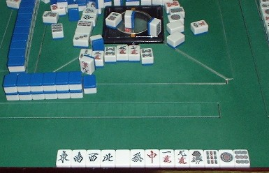
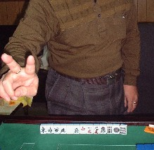

（２０）国士無双
役満貫は数々あれど、もっともポピュラーなのが国士無双。σ（-_-）もこれまでけっこうアガっている。といってもどれぐらいアガったのか覚えていない。雀歴38年だから、年１回とすると38回。
しかし38年間、同じペースで打っていたわけではない。あまり打たなかった時期にはまったくアガらなかった年も何回かあるし、打ちまくっている時代には一晩に２回なんてことも何度かある。そんなんから考えると、たぶん30回前後かもしれない。
そんなσ（-_-）でも、十三門張というのはアガったことはなかった。いや、学生時代に東大近くの友人の下宿で、振り聴十三門張をツモアガリしたことはある。
昭和40年当時、役満貫は３倍満が一般的だった（役満が４倍というのは、それ以降になってぼつぼつ登場してきた記憶）。それでもその友人の下宿ルールでは、十三門張は６倍満だという。「じゃあ、振り聴でも十三門張ならいいのか」と聞くと、ＯＫという返事。
そしたら２回目にそこで打ったとき、一つ待ちをツモあがった。そこで頭を切り出して十三門張型として、結局ツモアガリした。これでも十三門張には違いないが、やはり本物は難しい。それが昨日、純正の十三門張をモノにした。世の中では珍しくもないかもしれないが、σ（-_-）にとっては雀歴38年目の快挙。さっそく記念にUPした。これが証拠の写真だ。(笑)
アガリ牌は上家の捨て牌列の最後にある。ふてくされてひん曲がっている。（笑）
配牌は、もう「国士をどうぞ」と言わんばかりの手。第１ツモが
。何も考えずにツモ切り。第２ツモが
。「おうおう、愛い奴め」とひとりごちながら打
。第３ツモが
。（おお、すばらしい。これで
でも来たら十三門張。でもまさかな）、と思いながら打
。
第４ツモが。 （なんでさっさと頭ができんのだ）と思いながらツモ切り。そしたら次に引いたのがホントに
その巡で誰かが打つだろうと思ったら、下家の切ったのが。対面が
、上家が
。（おい、なんでタンヤオ牌ばかり切るんだ）と思いつつ、ツモった牌が
（今度こそ、誰かが切るだろう）と思ったら、下家がが薄くなっていて、嵌

両手に指輪をしているが、これは決してツリコミ用のリングではない。ひとつは結婚指輪で、もう一つは親父の形見。ゆめゆめ疑うことなかれ。（笑）